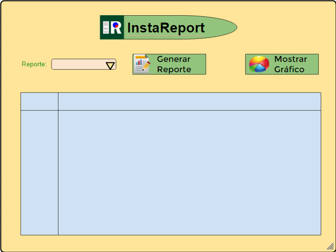

Sitio Web
¿Qué es?
InstaReport es un módulo que forma parte del sistema de rendición de pruebas para la materia de Aplicaciones en Ambiente Libres.
¿Cuál su función?
Se encarga de recolectar y analizar los diferentes datos obtenidos en los módulos anteriores y generar reportes que contengan información relevante al desempeño de los estudiantes en las pruebas evaluadas.
Objetivos:
Crear listados con toda la información de los estudiantes en base a la calificación obtenida en las pruebas tomadas.
Proporcionar información específica sobre la prueba, que puede utilizarse como estadística para conocer el por qué el estudiante a obtenido una calificación alta o baja.
Obtener un promedio total del curso el cual nos indicará que curso tiene mejor calificación.
Tener un listado para saber que personas pasan o reprueban el curso en base a sus calificaciones.
Desarrollar el módulo de reportes del proyecto de Cuestionario automático, haciendo uso de herramientas Open Source.
El módulo de reportes deberá recibir y procesar la información entregada por los módulos de Preguntas y de Calificaciones con el objetivo de generar reportes que contengan información valiosa para los interesados.
Los reportes han de ser fáciles de comprender y deberán incluir y relacionar información pertenenciente a los cuestionarios, intentos, tiempos, estudiantes, calificaciones, entre otros parámetros que puedan resultar de interés.
Datos del Proyecto
Periodo activo: Octubre 2015 - Febrero 2016
Estado: En Desarrollo
Diseño de la Aplicación
Manual de uso: Enlace
Autores y Colaboradores del Proyecto:
Contacto o Soporte
Tienes problemas con la página? Revisa nuestra documentación o contacta a soporte y estaremos gustosos en ayudarte a resolverlo.
¿Deseas Colaborar?
Para reportar algún bug o ayudarnos a mejorar este producto, visita nuestro sitio en GithubTambién puedes suscribirte para recibir información referente al proyecto, como por ejemplo nuevos releases, bugs reparados, noticias del proyecto, nuevos aportes, ayuda requerida, noticias del proyecto, discusión del proyecto, bugs encontrados y solucionados y más, cabe recalcar que la información recibida depende del tipo de suscripción. releases